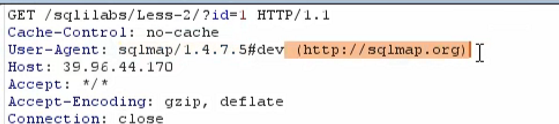
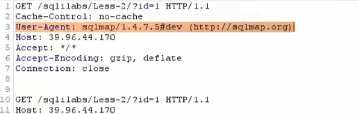
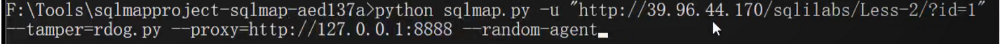
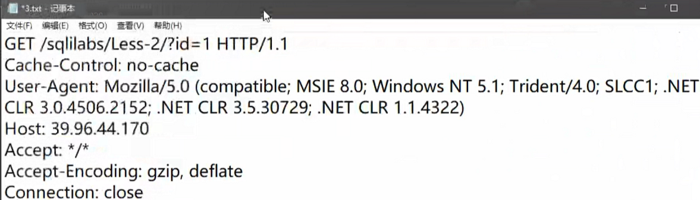
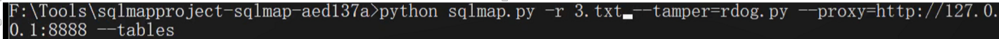
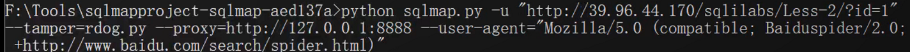
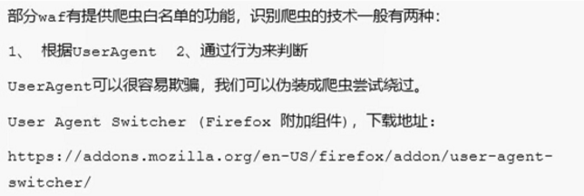

sql注入补充
1.数据库注入流程
access数据库除外，常规的数据库注入流程
1.信息收集
操作系统、数据库、网站脚本语言
明确提交方法参数类型
数据库名、数据库用户、数据库版本
其他：网站路径、后台等
2.数据注入
同数据库-配合数据进行后台或其他getshell
1.低版本数据库
暴力查询结合读取查询
2.高版本数据库
information_schema数据查询
3.高权限注入
1.常规查询，也即2数据注入
2.跨库查询-利用注入进行跨数据库查询
3.文件读写-getshell
1.存在魔术引导-编码或者宽字节绕过
2.不存在魔术引导
4.命令执行-getshell
5.注册表读取 -getshell
4.bypass
1.防注入
1.自带防御：魔术引导
2.内置函数：int等
3.自定义关键字
4.waf防护：安全狗、宝塔
前三种需要结合实际情况进行绕过
2.bypasswaf
https://Cnblogs.com/backlion/p/9721687.html
https://Blog.csdn.net/nzjdsds/article/details/93740686
1.数据操作
大小写、加解密、编码解码、等价函数、特殊符号、反序列化、注释符混用
2.提交方式
更改提交方式
变异
3.fuzz
4.数据库特性
/*!50001 slect * from test */但是只针对mysql有用，表示数据库是5.00.01以上才执行
实战中不一定知道有效版本号，可以写一个脚本fuzz
5.垃圾数据溢出
6.http参数污染
7.sqlmap绕waf
sqlmap语法：https://cnblogs.com/bmjoker/p/9326258.html
1.tamper
绕过脚本位于sqlma/tamper下，但自带的不怎么ok，是比赛用的，需要自写脚本
只需打开一个已有的脚本，将其payload替换为自己的即可,执行时只需指定参数：--tamper=rdog.py
2.修改数据特征
但是这时还是不行，因为sqlmap数据包自带特征值（抓包可以指定参数到抓包工具监听的ip端口：--proxy=http://ip:port）

其实在发现带tamper还是执行不成功时，可以用浏览器访问，将其成功访问的请求包与sqlmap的请求包对比来发现不同，这也是发现并解决其他工具被ban的思路之一
3.UA
绕过UA头的限制，可以使用参数：--random-agent //随机出现UA头


4.中转脚本
但是如果waf检测严格会发现数据包中其他信息是一样的，这个时候就要另写中转脚本了
1.自定义数据包
在sqlmap根目录下创建一个txt文件，自定义文件数据包内容，指定参数：-r 自定义文件名


sqlmap将会以其为数据包形式发送
2.中转脚本
8.绕过流量检测
但是如果waf开启了cc检测，这时sqlmap还是会被拦截，这时有三种绕过方法
1.爬虫白名单


2.设置延迟
设置参数：--delay 1
3.ip代理池
4.ip白名单
从网络层获取ip，伪造不了，若是获取客户端的ip可以修改数据头的以下五类来绕过
1 | X-forwarded-for |
5.静态资源
特定的静态资源后缀请求，常见的静态文件(.js .jpg .swf .css等等)，类似白名单机制，waf为了检测效率，不去检测这样一些静态文件后缀名请求
1 | http://ip/sql.php/1.js?id=1 |
6.url白名单
部分waf会设置默认的白名单列表，如admin/manager/system等管理后台。只要url中存在白名单的字符串，就作为白名单不进行检测
1 | http://ip/sql.php/admin.php?id=1 |
2.其他数据库
1.access
access数据库与常规数据库相比没有数据库名，其数据库独立位于网站源码下面，所以不存在跨站注入
access注入更多的是猜（工具爆）字段名和表名，没有数据库，文件操作功能
access暴力破解猜不出来怎么办？
1.access偏移注入-解决列名获取不到的情况
2.查看登录框源代码的表单值或者观察url特征等也可以针对表名或者列名获取不到的情况
2.mssql
https://cnblogs.com/xiaoshaonian/p/6173644.html
3.mongodb
Sqlmap不支持mongodb注入，对应工具：https://github.com/youngyangyang04/NoSQLAttack 在linux上运行
靶场练习：https://mozhe.cn/bug/detail/YXIRYUJPYk1vQjAreHIweVAyMzVTUT09bW96aGUmozhe
靶场通过文章：https://blog.csdn.net/qq_39936434/article/details/95319449
3.补充注入方式
1.json注入
2.dnslog注入
解决盲注不能回显，效率低
要有文件读写权限，高权限，
dnslog平台自搭建：https://github.com/ADOOODnslogSqlinj
4.非常规注入
information被ban的绕过：http://www.cl4y.top/information%e8%a2%abban%e7%9a%84%e6%83%85%e5%86%b5%e4%b8%8b%e8%bf%9b%e8%a1%8csql%e6%b3%a8%e5%85%a5/